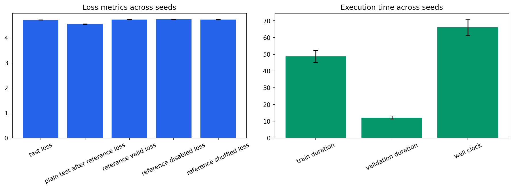

Seeds: [1, 7, 21, 42, 87]. Values are population mean +/- standard deviation.
| Test Loss | 4.71743 +/- 0.00869 |
|---|---|
| Test Perplexity | 111.884 +/- 0.967 |
| Plain Test After Reference Loss | 4.55001 +/- 0.0112 |
| Reference Valid Loss | 4.72964 +/- 0.0106 |
| Reference Disabled Loss | 4.74131 +/- 0.00724 |
| Reference Shuffled Loss | 4.73042 +/- 0.0099 |
| Train Duration Seconds | 48.7198 +/- 3.51 |
| Validation Duration Seconds | 12.1757 +/- 0.981 |
| Wall Clock Seconds | 66.044 +/- 4.88 |
| Processed Tokens | 78610.8 +/- 78.4 |
